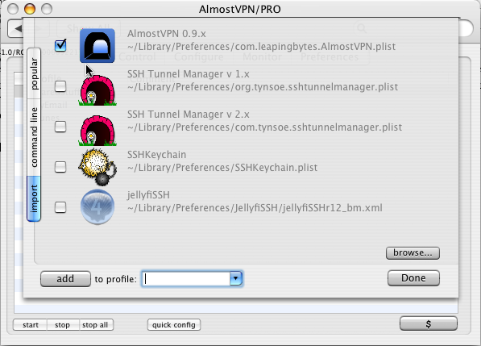
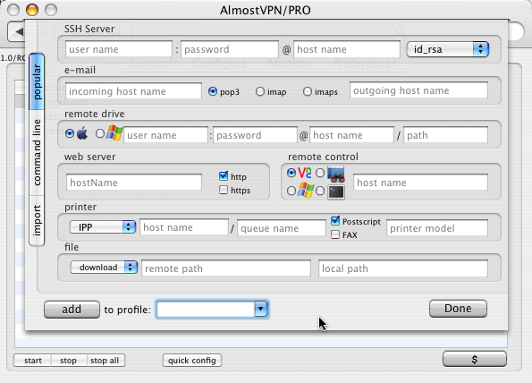
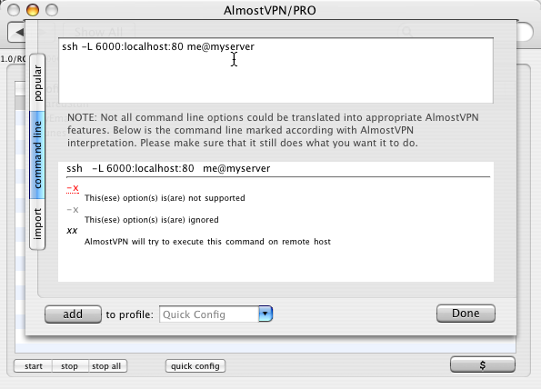

Quick Configuration
Best way to get you going with AlmostVPN fast is by using "quick
config" dialog. Use "quick config" button at the bottom of
the
window to activate it. This dialog provides you with 3 ways
to
configure AlmostVPN:
- you can import configuration data from other applications,
- you can use shortcuts for configuring access to most
popular applications,
- you can use your favorite command line
All 3 screens work the same way. Once you "happy" with
configuration data, you can click "add" button to configure AlmostVPN
accordingly. By default configuration will be applied to
"Quick
Config" profile, but you can change it by entering other name in combo
box at the bottom of the screen. You can press "add" button
as
many times as needed to configure many different things. Press "done"
to close "Quick Config" dialog.
Importing
When you start AlmostVPN for the very first time, it will do
quick search for configuration data from older version of AlmostVPN and
some other SSH Tunnel managing applications. If AlmostVPN was
able to find such configuration files, it will present you with
something like this:

In case you keep your configuration files in "non-standard" place (
~/Library/Preferences ), you can use "browse..." button to add
additional configuration files to the list. Once you got
file(s)
you want to import configuration from you can click "add" button to
import configuration into AlmostVPN. You can designate a
profile
into which the configuration data will be imported by entering profile
name into combo box at the bottom of the dialog (by default profile
name "Quick Config" will be used).
NOTE: If application support notion of profile, than
profile
name in the combo box will be ignored (this is the case for AlmostVPN
0.9.x and SSHTM).
NOTE:
SSHAgent does not store
its configuration in "well known" place. You need to use "browse..."
button to locate SSH Agent "*.tunnel" files.
Shortcuts for Popular Applications
AlmostVPN can do really amazing things, but quite often your initial
needs will be quite simple. Take a look at "Quick
Config/Popular"
screen and see if it could help you with configuration.

First of all, you need to provide information about your SSH Server
(like host name, user name and password). Than you can enter
any
combination of additional data.
FOR EXAMPLE:
if you want to configure access to your e-mail server, you will need to
enter host name for your incoming e-mail server, select incoming email
server type ( POP3, IMAP or IMAPs), enter host name for outgoing e-mail
server (SMTP) and then click "add" button. AlmostVPN will
automatically configure profile which when running, will provide access
to your e-mail server(s).
You can choose to which profile the configuration data should be added
to, by entering profile name in combo box at the bottom of the screen.
You can do "add" more then once. So in order to
configure
access to more then one e-mail server you will need to
repeat process described above for each server. You
can
configure access to remote drives, web server, remote control, printer
and file in the similar manner.
Command Line
If you coming to world of AlmostVPN from the command line, you are in
luck. AlmostVPN allows you to use your favorite command line
to
do configuration

Enter (or paste) your command at the top text area and AlmostVPN will
show in the bottom area result of your command interpretation. Not all
command line options make sense to AlmostVPN. Some of them will be
ignored (-x),
while some other may be flagged as "not supported" (-x).
If you agree with the way AlmostVPN interpreted your command
line, you can click "add" button to configure AlmostVPN accordingly.